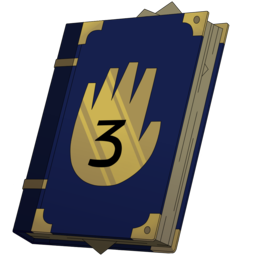
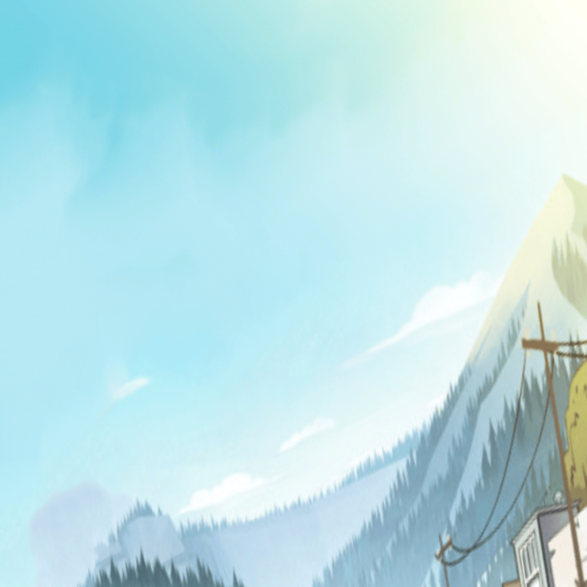
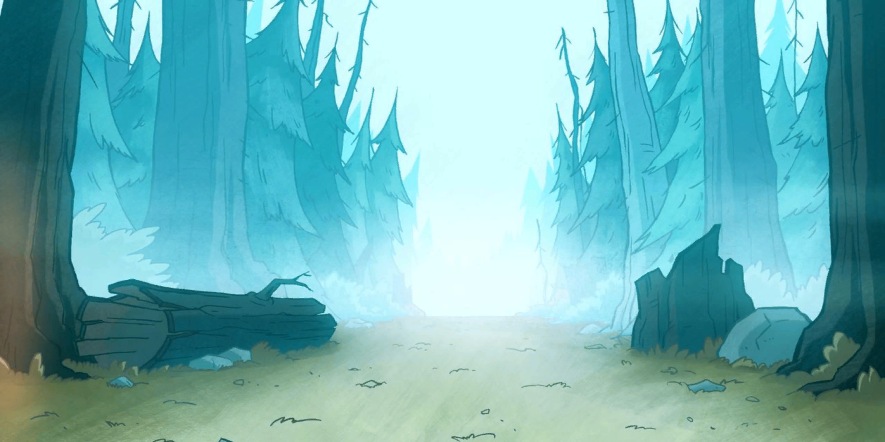
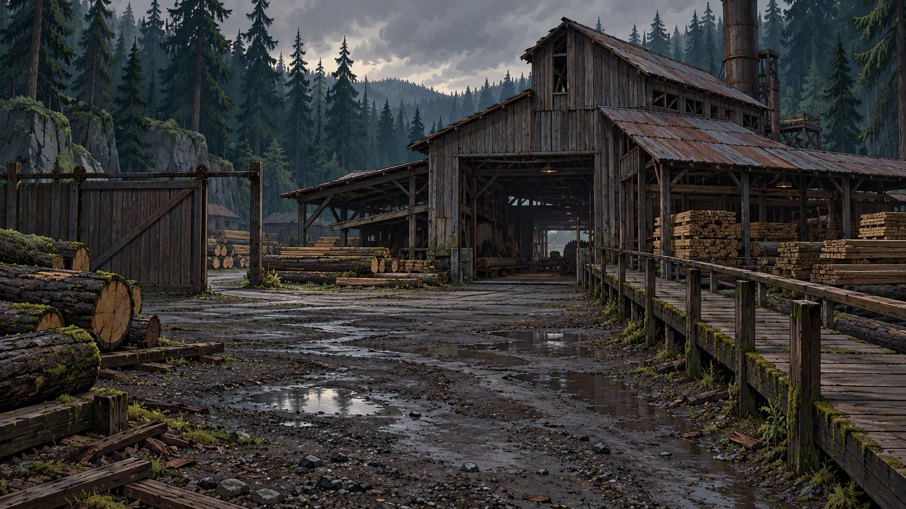

По оригинальной игре
Глава 0
Первая встреча Гидеона и Пасифики, охота на монстра и загадочный синий свет.
Семь языков, включая русский

Reverse Falls

По оригинальной игре
Первая встреча Гидеона и Пасифики, охота на монстра и загадочный синий свет.
Семь языков, включая русский

01Авторское продолжение
Пропавшие животные, странные следы и первое настоящее расследование.
Русский · English
Продолжение расследования
Два разных следа и пропавшие животные. Пасифика и Гидеон проверяют улики, которые больше не складываются в прежнюю версию.
Русский · English
Продолжение открывается после завершения главы 1 в основной истории.

03Венди · новое расследование
Странные происшествия у лесопилки и Венди, которая знает больше, чем говорит.
Русский · English
Продолжение открывается после завершения главы 2 в основной истории.
Глава 1 завершена
Space / Enter: next · H: hide · A: auto · F: fullscreen · Esc: options
REVERSE FALLS · ТВОЯ ИСТОРИЯ
Каждое решение оставляет след.
Открыто 0%
Новое решение станет частью вашей основной истории.
Текущая основная история будет заменена импортированным сохранением.
Перетаскивай карту · Колесо — масштаб · Esc — вернуться